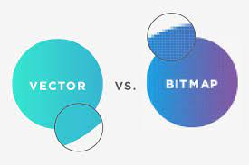

vector afbeeldeningen is een afbeelding dat wiskundige formules gebruikt om simpele vormen er van te maken om daar weer van een complexe afbeelding vvan te maken. omdat het met formules is opgeslagen kan je het naar meer en minder aantal pixels veranderen zonder enkel probleem. bestanden met vector afbeeldingen gebruiken .SVG .IA of .EPS
bitmap kleurt pixels in en daardoor wordt het pixelig bij vergroting. je gebruikt bij bitmap's .JPEG .PNG .GIG of .BMP.
